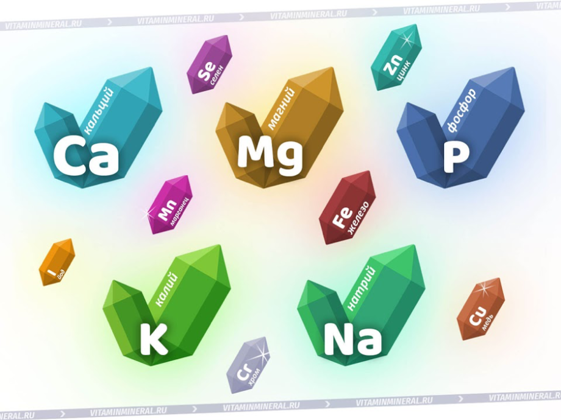

Часто мы чувствуем усталость, недомогание, особенно в «переходный период», когда сменяются времена года. Организму не хватает витаминов и других полезных веществ и микроэлементов. Что же необходимо для отличного самочувствия и правильного функционирования организма?
Витамины и полезные вещества являются необходимыми составляющими для правильного функционирования организма. Человек состоит из множества мельчайших кирпичиков – клеток. Клетки эти имеют определенную структуру, отличаются в зависимости от расположения и предназначения.
Все вместе, они образуют ткани, например мышечная, нервная. Ткани образуют органы и системы органов. Взаимодействуя между собой, с помощью сложных биохимических реакций, образуют сложнейшую структуру – человеческий организм. И вот, как раз для правильного и долгого функционирования этой сложной биологической конструкции, необходимо поступление витаминов и полезных веществ извне.
Витамины - вещества органической природы, поступающие извне или синтезирующиеся в организме, участвуют в построении ферментов и гормонов, которые в свою очередь, исполняют роль регуляторов различных биохимических процессов.
К полезным веществам относятся микроэлементы, незаменимые аминокислоты и другие, жизненно необходимые субстанции, ежедневно поступающие в организм с пищей.
Микроэлементы, как и витамины - основа ферментов, специализированных клеток, гормонов. Незаменимые аминокислоты являются жизненно необходимым строительным материалом. Содержатся в животных белках.
Важно не только включение в рацион пищи богатой витаминами, но и ее сбалансированный характер. Вкратце рассмотрим основные группы витаминов и содержащие их в продукты.
Витамин А – важен для зрения, нормального состояния кожи и волос. Наиболее богаты им печень и рыбий жир.
Витамины группы B – участвуют в энергетическом обмене. Содержаться в зерновых, крупах, мясе, дрожжах.
Витамин С – совместно с витаминами A и E предотвращают появление свободных радикалов. Он важен для соединительных тканей и усвоения железа. Больше всего богаты витамином C свежие овощи и фрукты.
Витамин D – может вырабатываться в организме человека самостоятельно, из холестерина в коже, под воздействием ультрафиолета.
Регулирует обмен фосфора и кальция. Богат данным витамином яичный желток, сливки, сливочное масло.
Витамин E – снижает риск тромбозов, важен для хорошего состояния кожи и развития мышц. Содержится в растительных маслах, шпинате, свекле, капусте.
Витамин K – способен в небольшом количестве образовываться в кишечнике, при помощи микроорганизмов. Важный компонент свертывающей системы, защищает печень и предстательную железу от рака. Наиболее богаты им свежие зеленые овощи, капуста, яйца.
Витамин P – антиоксидант, также защищает кровеносные сосуды от повреждений. Основной источник – ярко окрашенные овощи и фрукты, вино, зеленый чай.
Минералы — это общий термин, обозначающий биологически важные компоненты неорганического (неживого) происхождения, которые в небольших количествах необходимы для нормальной работы организма: функционирования мышц и нервов, поддержки крепости костей и зубов, выработки эритроцитов, а также многих других задач. Как и в случае с большинством витаминов, наш организм не может самостоятельно производить минералы, поэтому они должны потребляться с пищей на регулярной основе.
Основное отличие от витаминов заключается в том, что минералы неорганического происхождения. Витамины же являются органическими веществами, поскольку вырабатываются живыми организмами: растениями или животными. Однако минералы тоже содержатся в растительной и животной пище, но изначально растения получили их из почвы, а животные — при поедании других животных или растений. К примеру, морковь содержит бета-каротин, который организм человека превращает в витамин А, но первоисточником минералов всегда являются почва или камни.
Витамины гораздо более «капризны», чем минералы, и могут разрушаться при нагревании, от солнечных лучей или неправильного хранения, теряя свои полезные свойства. Минералы имеют более простую химическую формулу и не столь деликатны в данном отношении.
Наконец третье отличие минералов с биологической точки зрения в том, что из их большого перечня, для функций организма нужно около 15-ти: кальций, хром, медь, йод, железо, магний, марганец, сера, молибден, фосфор, калий, селен, натрий и цинк. Витамины же в том или ином количестве необходимы все.
Все минералы, которые используются для биологических нужд, можно поделить на две основные группы: макроэлементы и микроэлементы. Типичными представителями макроэлементов являются кальций, магний, натрий (в составе солей), калий и фосфор, которые нужны организму в относительно больших количествах. Микроэлементы не менее важны, но требуются в гораздо меньших количествах и включают такие вещества, как цинк, железо, медь, марганец, хром, селен и йод.

Теперь кратко рассмотрим принцип действия каждого из них.
• Натрий и калий — необходимы для поддержания нормального водно-электролитного баланса, нервной передачи и сокращения мышц.
• Кальций важен для здоровья костей и зубов, участвует в сократительной функции мышц, функционирования нервной системы, свертываемости крови, регуляции артериального давления и иммунной системы.
• Фосфор содержится практически во всех клетках организма как часть системы, которая поддерживает кислотно-щелочной баланс.
• Магний участвует в синтезе белка, очень важен для нервной и сердечно-сосудистой систем.
• Железо — часть молекулы гемоглобина в эритроцитах и миоглобина в мышцах, которые используются для переноса и снабжения клеток кислородом. Участвует в энергетическом обмене.
• Цинк является составной частью многих ферментов, необходимых для производства белка и генетического материала. Нужен для в заживления ран, репродуктивной функции (особенно у мужчин), нормального роста и полового созревания, здоровья иммунной системы.
• Йод содержится в гормоне щитовидной железы, который регулирует обмен веществ.
• Селен — антиоксидант, является неотъемлемой частью более двух десятков селенопротеинов — белков, которые играют критическую роль в репродукции, метаболизме гормонов щитовидной железы, синтезе ДНК и защите от и инфекций.
• Медь, молибден и марганец — часть многих ферментов, медь необходима в метаболизме железа.
• Хром выступает в тесном взаимодействии с инсулином для регулирования уровня сахара в крови.